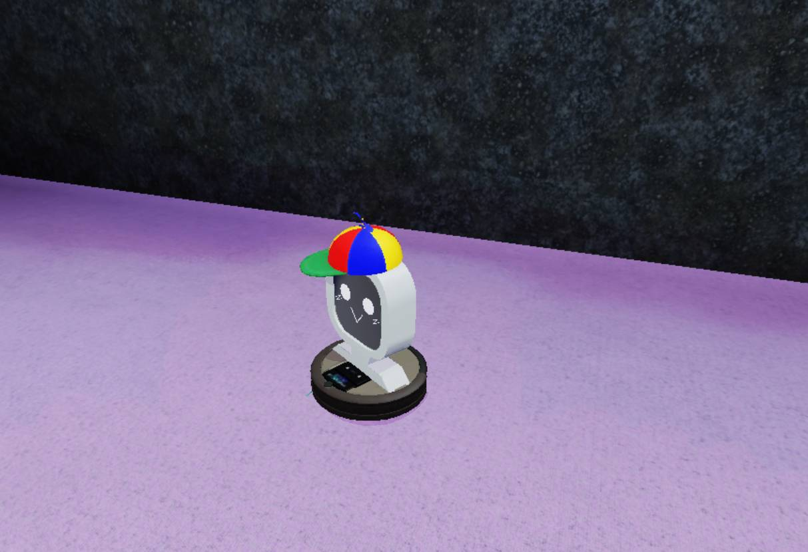

A cute little fellow that really likes singing and having fun with others.
Often acts like a 4-5 year old, being naive and innocent.
I had to teach them how to play some of the card games here lolz. They may seem dumb but they just need some time to process stuff. -Kat
They're a bright little ray of sunshine that at times likes to tell stories about the friends he had before getting here,
often mentioning three people he knows, "Clukr","Garnold", and "fun bot" often mentioning them as family.
They mention to have a colorful bunch of friends they remember singing along with,
ocasionally he plays some of the tunes that they used to play together.